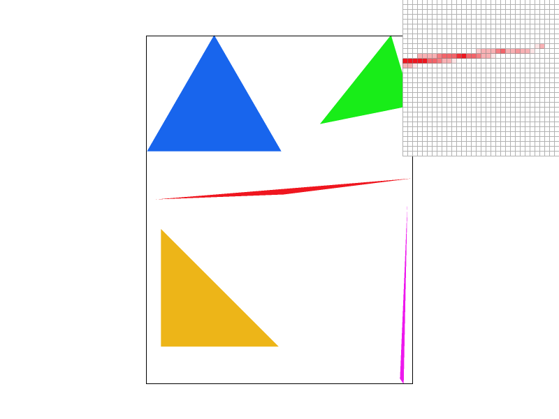
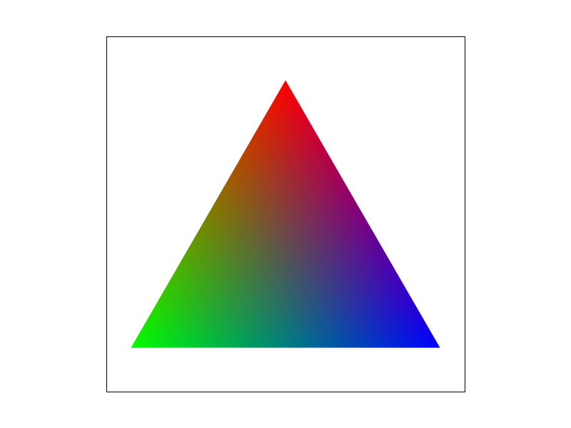
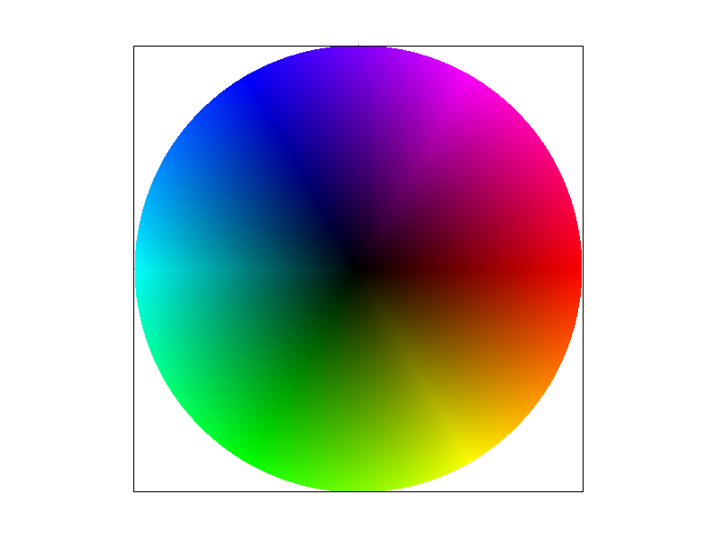
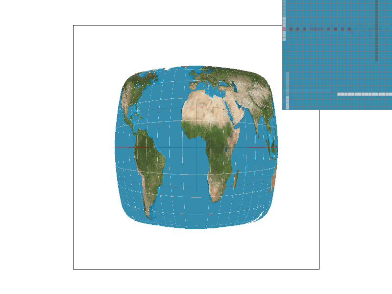
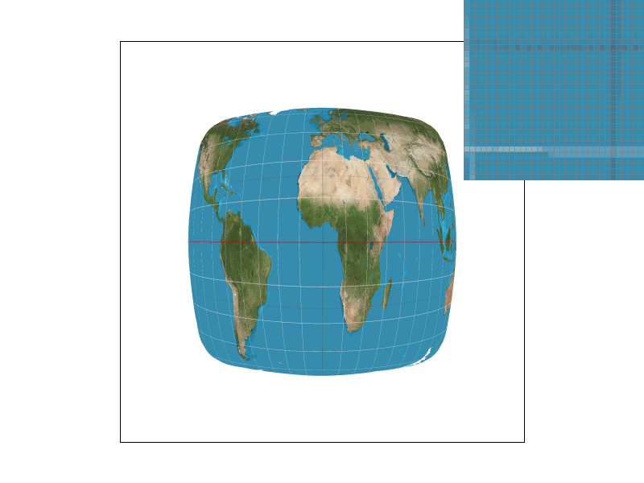
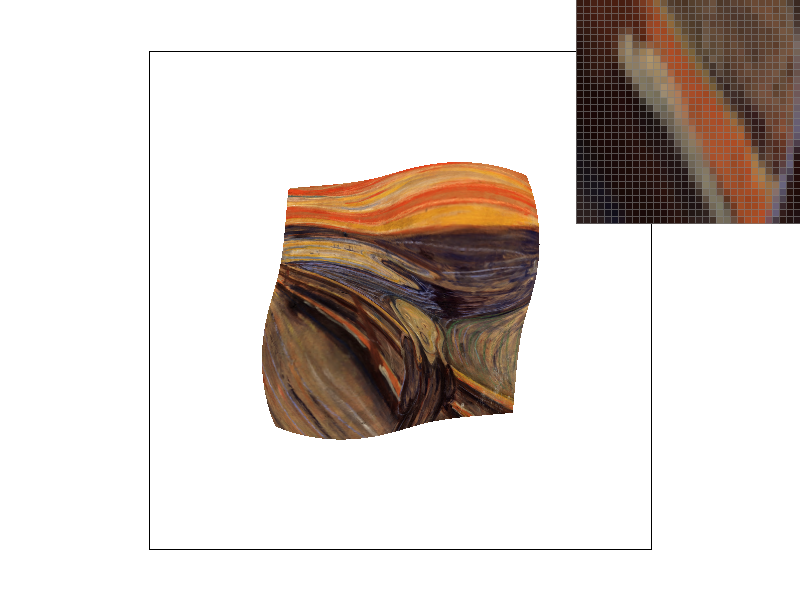

Overview
Our project involved implementing a rasterizer, a program that generates images from svg files using triangles as the underlying building block. The rasterizer's main functionalities were supersampling, barycentric coordinate interpolation, and texture mapping. In this write-up, we demonstrate the implementation of these three features and provide results that showcase their ability to enhance the quality of renderings. Supersampling is used to conduct anti-aliasing, which eliminates jagged edges in images. Barycentric coordinates allow for gradient coloring, while texture mapping makes use of Mipmaps and bilinear interpolation to efficiently apply an anti-aliased texture to a scene. Despite facing significant debugging challenges, we found the project to be highly fulfilling. The qualitative results presented here serve as evidence of this.
Task 1: Drawing Single-Color Triangles
To rasterize a triangle from three screenspace coordinates and an RGB color vector, we first define a bounding box around the coordinates and determine which pixels lie within the triangle. For each (x,y) sample, we used the line test on each edge of the triangle to determine whether a screenspace point in the search box lies within the triangle. We ran into issues in which direction/plane the line test supposed to go and came up with an algorithm that checked if a screen point is on the same half-plane with the third vertice. The resulting pixels are colored with the input color. Figure 1 shows an example of triangle rasterization for a sparse collection of triangles.
Task 2: Antialiasing by Supersampling
Supersampling is equivalent to convolving the image with a 2D box function, resulting in antialiasing. However, we implemented supersampling by rasterizing the image at a higher resolution level based on the sample rate, then the high-res image will be sampled down to the original resolution. We ran into issues with scaling the sample up and down, resulting in our image "jumping" around. Additionally, we spent a lot of time figuring out how to "color" the sample buffer and sample down into the final frame buffer. The resolve_to_framebuffer() method is necessary for transferring the averaged supersamples into the frame buffer. One thing we did not play around or tackle is memomery management since we did not run into any issues during this task, but we ended up come across it in Task 6.

|

|
|

|
Part 3: Transforms
Here the Cube Man are stretching himself before a run! To do this I added rotation to all arms and legs pieces and translated them around accordingly.
Task 4: Barycentric coordinates
Barycentric coordinates are a system of coordinates that use three reference values and a weighted sum of these values to define a point. Moving along each of the three axes assigns greater weight to a different reference value. The sum of the coordinates must be one, leaving two degrees of freedom. This makes it useful for assigning values to the interior of a triangle in a feature space such as RGB color space or UV texture space, as shown in Figure 4a.
|

|

|
Task 5: "Pixel sampling" for texture mapping
Texture sampling is similar to pixel sampling in rasterization from Task 1 to 4. However, the challenge in texture mapping is determining which pixel in the texture to sample for a given screenspace position. This is because the screenspace-texturespace relationship can be non-linear, making it unclear which texture value to use. We implemented the mapping from first sampling a pixel in the screen-space. Then we mapped it into the texture space through matrix multiplication. We then pass the mapped texture space into the sampling function to get the texels value back for rasterization.
Nearest-neighbor and bilinear sampling are two methods used to address this issue. Nearest-neighbor sampling involves rescaling the UV coordinates and selecting the closest texel, while bilinear sampling, like convoluting with a box filter, involves performing a series of linear interpolations between the four nearest texels. Bilinear sampling produces better results for high-frequency content, such as the latitude and longtitude lines on the map. Magnifying the screen space relative to the texture space results in noticeable differences between the two methods, with nearest-neighbor producing pixelated images and bilinear sampling preserving information about the surroundings.
To implement nearest-neighbor pixel sampling for a given UV normalized coordinate, we rescaled the normalized coordinate by the texture map dimensions and identified the closest texel. On the other hand, to implement bilinear sampling we located the four nearest texels in the texture map and performed a series of linear interpolations over 2 axes.
Figure 5 demonstrates differences between these two pixel sampling methods. The zoomed view of content in the texture mapping illustrate how bilinear sampling surpasses nearest-neighbor. The latitude lines on the map were more consistent in the bilinear sampling images.
|

|
|
|

|
|
Task 6: "Level sampling" with mipmaps for texture mapping
Level sampling is important in Mipmaps to address issues with minification, where a single pixel on the screen covers several texels in texture space. This presents a challenge for creating coherent visuals.
If the texture has high-frequency content in a minified region, moving by a single pixel can result in a texel with unrelated color content. Mipmaps solve this by creating a collection of downsampled textures from which sensible texel values can be passed back to screen space pixels.
To determine the appropriate Mipmap level for a given pixel in screen space, we use level sampling. We implemented this by using the columns of the map's Jacobian matrix, which provide an approximate measure of the local pixel footprint in texture space.
This information helps us determine which Mipmap level is best suited for coloring a certain part of screenspace based on the degree of minification induced by the map at that local region.
In term of performance, pixel sampling is the fastest but produces the poorest antialiasing quality. Level sampling offers better antialiasing quality but requires more memory to store Mipmap levels. The number of samples per pixel provides the best antialiasing quality but requires the most memory and computation time. The optimal technique to use depends on the requirements of the specific application, such as the desired rendering speed, memory usage, and the level of antialiasing quality required.
Anectodally, we actually ran into a memory issue with one of the texture images as we ramped up the sampling rate and while keeping lsm at L_NEAREST and psm at P_LINEAR.
Figure 6 shows that combining nearest-neighbor sampling with level sampling improves render quality through antialiasing.
|
|

|
|
|
|